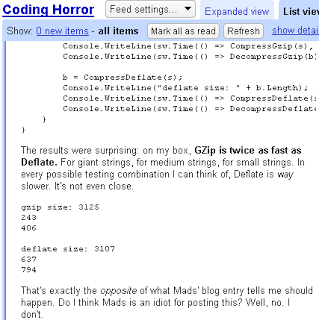

Generally, I try to avoid turning this blog into some sort of snark-fest about other programmers or blogs. I've disagreed with Jeff Atwood once or twice though, and so by posting this I'm probably straying a little close to the edge...but what the hell.
A couple of days ago Coding Horror carried a fluff piece about how all developers should be marketers too. Predictably, the article soon got posted to proggit where it was ripped on by reddit's resident Jeff-haters, and even more predictably the comments were a mix of interesting insight and barely-concealed hate.
Apparently some of them got up Jeff's nose a bit, and today he responded. The core of his rebuttal seems to be that you shouldn't trust what you read on blogs, and should verify everything yourself. True enough, I guess, if perhaps a bit impractical given the sheer amount of information out there.
Then, however, Jeff goes on to give an example by referencing a compression benchmark he'd read on a blog and providing counter-analysis to show that the benchmark was wrong in claiming Deflate is faster than gzip. In doing so, much knowledge was gained.
Or so we are told.
The comment thread quickly becomes a goldmine of humour. Bugs in Jeff's benchmarking code (not resetting the stopwatch) meant that the durations were cumulative, not independent, with inevitable distortion of the results. Another commenter pointed out that gzip cannot possibly be faster than Deflate, since the gzip algorithm IS the Deflate algorithm plus some additional computation.
"gzip" is often also used to refer to the gzip file format, which is:
- a 10-byte header, containing a magic number, a version number and a timestamp
- optional extra headers, such as the original file name,
- a body, containing a DEFLATE-compressed payload
- an 8-byte footer, containing a CRC-32 checksum and the length of the original uncompressed data
With the benchmarking code fixed, we see that Deflate is indeed slightly faster than gzip.
All of which leads to repeated quotations from Jeff about the community being smarter than him, and some drastic toning down of language in post-publication edits to the article. I read a cached version of the RSS feed, which is markedly different to the article currently live on codinghorror.com - "on my box, GZip is twice as fast as Deflate" becomes "on my box, GZip is just as fast as Deflate", "Deflate is way slower. It's not even close" becomes "Deflate is nowhere near 40% faster", etc.

Anyone who's tackled a major performance problem will likely agree that profiling is a tremendously valuable technique that should always be applied before attempting to optimise (i.e. look before you leap). I think this little episode has highlighted a couple of important things to bear in mind, however:
-
Profiling isn't a magic wand - if you use buggy profiling code, you are leading yourself up the garden path.
-
Profiling is less useful when you can reason (in the mathematical sense) about the code. That involves understanding the algorithms you are dealing with. Gzip is Deflate plus a bit more processing - so unless that extra processing has a negative duration gzip must necessarily take longer. You don't need a profiler to work that out. Look beforeyou look before you leap.
Anyway, enough hatcheting from me, normal service will be resumed shortly.